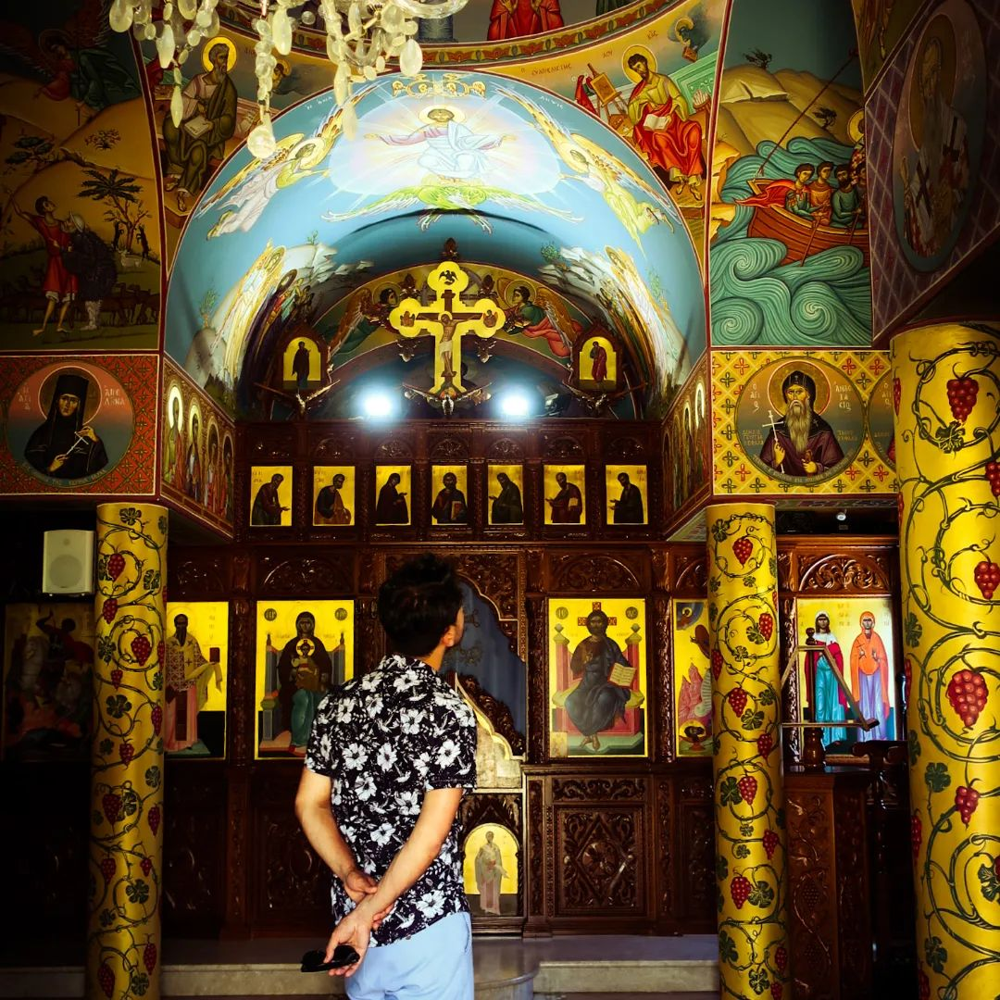
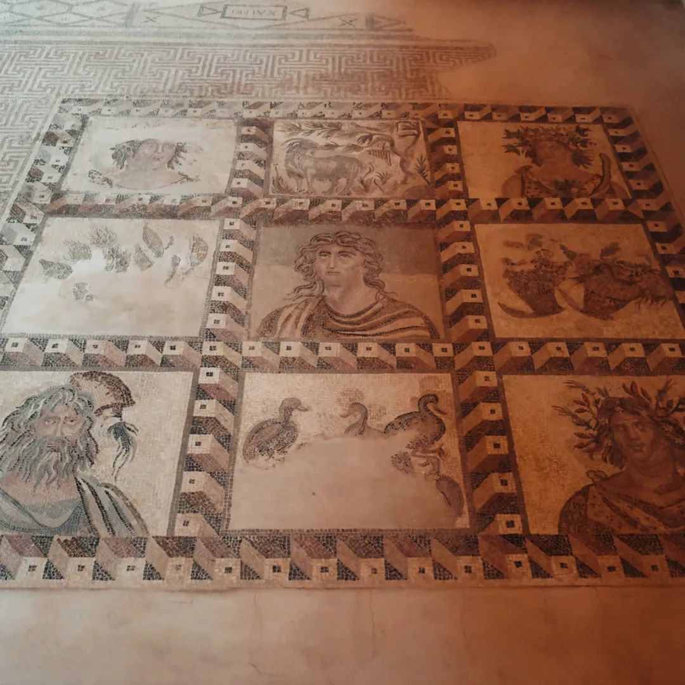
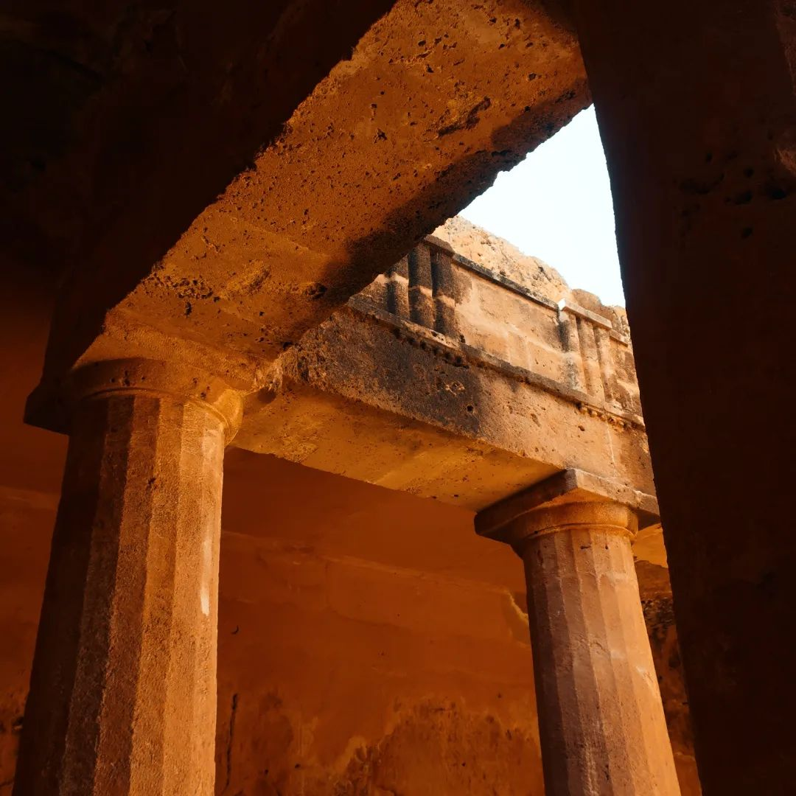
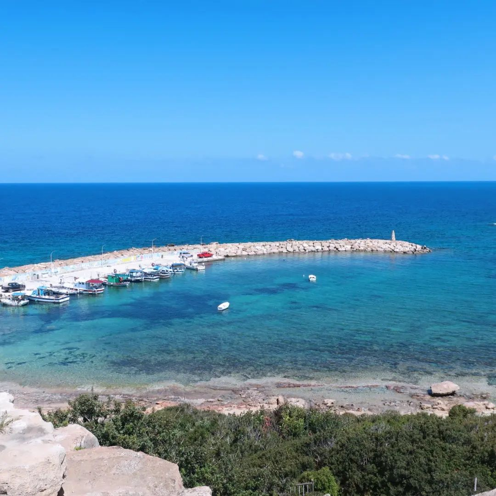
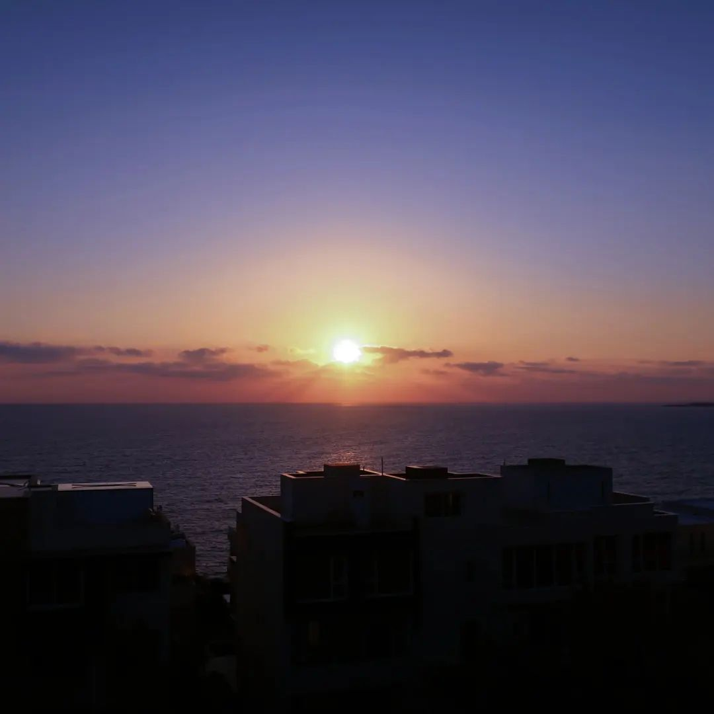

Exploring Cyprus: Our Week-Long Adventure in May 2023

In May 2023, we spent an amazing week exploring the beautiful island of Cyprus, starting our journey in Larnaca, where we enjoyed its picturesque promenade and serene beaches. From there, we headed to Nicosia, the world’s last divided capital, where we explored both the Greek and Turkish parts of the city, crossing the Green Line and experiencing the rich history and unique cultural blend of both sides.
We then traveled to Paphos, a UNESCO World Heritage city steeped in history, where we visited the ancient Tombs of the Kings and the stunning Paphos Archaeological Park, which showcased beautiful mosaics and historic ruins.
Our journey continued to the scenic Troodos Mountains, where we explored charming mountain villages and visited stunning Byzantine monasteries hidden among the lush landscapes. Finally, we concluded our trip in the lively coastal town of Agia Napa, known for its pristine beaches and vibrant nightlife, offering a perfect blend of relaxation and excitement.
This week-long journey through Cyprus provided a wonderful mix of history, culture, and natural beauty, leaving us with unforgettable memories of this Mediterranean gem.





 Bordeaux
Bordeaux
 Tallin & Riga Christmas Markets
Tallin & Riga Christmas Markets
 Barcelona, Vic & Girona
Barcelona, Vic & Girona
 Skopje, North Macedonia
Skopje, North Macedonia